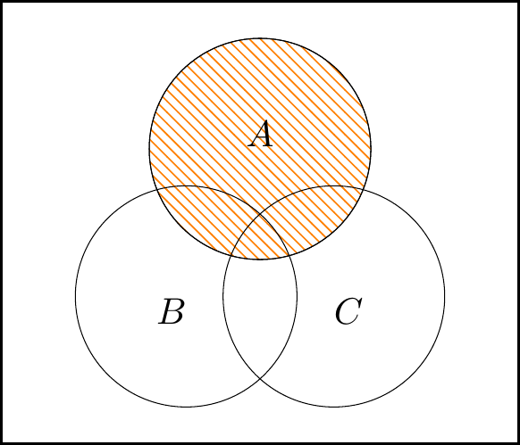
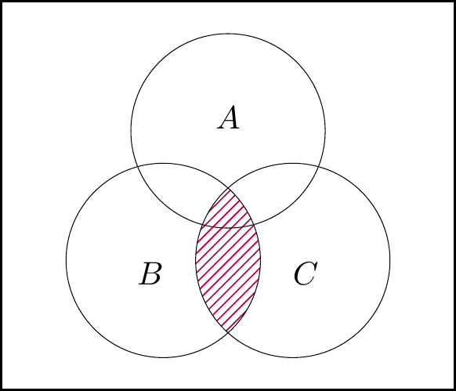
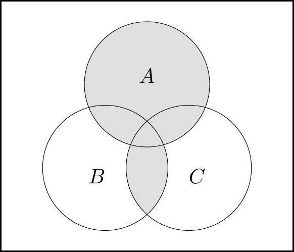
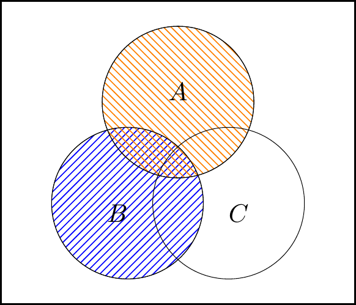
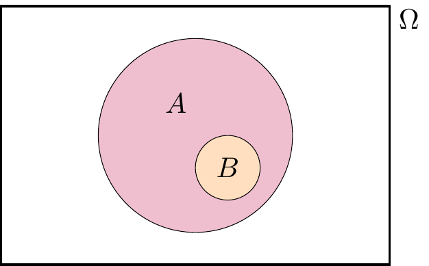
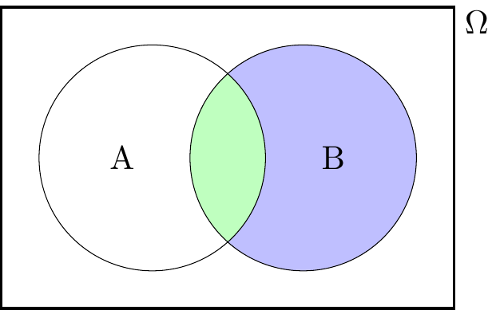

Section 2 Probability spaces
2.1 What is probability?
We now begin the big central block of this module, on probability theory.
Probability theory is the study of randomness. Probability, as an area of mathematics, is a fascinating subject in its own right. However, probability is particularly important due to its usefulness in applications – especially in statistics (the study of data), in finance, and in actuarial science (the study of insurance).
Probability is well suited to modelling situations that involve randomness, uncertainty, or unpredictability. If we you want to predict the time of the next solar eclipse, a deterministic (that is, non-random) model based on physical laws will tell you when the sun, the moon, and the earth will be in the correct positions; but if you want to predict the weather tomorrow, or the price of a share of Apple stock next month, or the results of an election next year, you will need a probabilistic model that takes into account the uncertainty in the outcome. A probabilistic model could tell you the most likely outcome, or a range of the most probable outcomes.
So what do we mean when we talk about the “probability” of an event occurring? You might say that the probability of an event is a measure of “how likely” it is to occur, or what the “chance” of it occurring is.
More concretely, here are some interpretations of probability:
- Subjective (or Bayesian) probability: The probability of an event is the way someone expresses their degree of belief that the event will occur, based on their own judgement, and given the evidence they have seen. Their belief is measured on a scale from 0 to 1, from probabilities near 0 meaning they believe the event is very unlikely to occur to probabilities near 1 meaning they believe the event is very likely to occur.
- This interpretation is philosophically sound, but a bit vague to be the basis for a mathematics module.
- Classical (or enumerative) probability: Suppose there are a finite number of equally likely outcomes. Then the probability of an event is the proportion of those outcomes that correspond to the event occurring. So when we say that a randomly dealt card has a probability \(\frac{1}{13}\) of being an ace, this is because there are 52 cards of which 4 are aces, so the proportion of favourable outcomes is \(\frac{4}{52} = \frac{1}{13}\).
- This interpretation is good for simple procedures like flipping a fair coin, rolling a dice, or dealing cards, where the “finite number of equally likely outcomes” assumption holds. But we want to be able to study more complicated situations, where some outcomes are more likely than others, or where infinitely many different outcomes are possible.
- Frequentist probability: In a repeated experiment, the probability of an event is its long-run frequency. That is, if we repeat an experiment a very large number of times, the probability of the event is (approximately) the proportion of the experiments in which the event occurs. So when we say a biased coin has probability 0.9 of landing heads, we mean that were we toss it 1000 times, we would expect to see very close to \(0.9 \times 1000 = 900\) heads.
- There are two problems with this. First, this doesn’t deal with events that can’t be repeated over and over again (like “What’s the probability that England win the 2022 World Cup?”). Second, to answer the question, “Yes, but how close to the probability should the proportion of occurrences be?”, you end up having to answer, “Well, it depends on the probability,” and you’ve got a circular definition.
- Mathematical probability: We have a function that assigns to each event a number between 0 and 1, called its probability, and that function has to obey certain mathematical rules, called “axioms”.
It will not surprise you to learn that, in this mathematics course, we will take the “mathematical probability” approach. However, we will also learn useful things about the other approaches: we will see that classical probability is one special case of mathematical probability; we will see a result called the “law of large numbers” that says that the long-run frequency does indeed get closer and closer to the mathematical probability; and a result called “Bayes’ theorem” will advise a subjectivist on how to update her subjective beliefs when she sees new evidence.
2.2 Sample spaces and events
Taking the “mathematical probability” approach, we will want to give a formal mathematical definition of the probability of an event. But even before that, we need to give a formal mathematical definition of an event itself. Our setup will be this:
- There is a set called the sample space, normally given the letter \(\Omega\) (upper-case Omega), which is the set of all possible outcomes.
- An element of the sample space \(\Omega\) is a sample outcome, sometimes given the letter \(\omega\) (lower-case omega), represents one of the possible outcomes.
- An event is a set of sample outcomes; that is, a subset of the sample space \(\Omega\). Events are often given letters like \(A\), \(B\), \(C\). We write \(A \subset \Omega\) to mean that \(A\) is an event in (or, equivalently, is a subset of) the sample space \(\Omega\).
This will be easier to understand with some concrete examples. We write a set (such as a sample space or an event) by writing all the elements of that set inside curly brackets \(\{\ \}\), separated by commas.
Example 2.1 Suppose we toss a (possibly biased) coin, and record whether it lands heads or tails. Then our sample space is \(\Omega = \{\mathrm H, \mathrm T\}\), where the sample outcome H denotes heads and the sample outcome T denotes tails.
The event that the coin lands heads is \(\{\mathrm H\}\).
Example 2.2 Suppose we roll a dice, and record the number rolled. Then our sample space is \(\Omega = \{1,2,3,4,5,6\}\), where the sample outcome \(1\) corresponds to rolling a one, and so on.
The event “we roll an even number” is \(\{2,4,6\}\). The event “we roll at least a five” is \(\{5,6\}\).
Example 2.3 Suppose we wish to count how many claims are made to an insurance company in a year. We could model this by taking the sample space \(\Omega\) to be \(\mathbb Z_+ = \{0, 1, 2, \dots\}\), the set of all non-negative integers.
The event “the company receives less than 1000 claims” is \(\{0, 1, 2, \dots, 998, 999\}\).
Example 2.4 Suppose we want a computer to pick a random number between 0 and 1. We could model this by taking the sample space \(\Omega\) to be the interval \([0, 1]\) of all real numbers between 0 and 1.
The event “the number is bigger than \(\frac12\)” is the sub-interval \((\frac12, 1]\) of all real numbers greater than \(\frac12\) but no bigger than 1. The event “the first digit is a 7” is the sub-interval \([0.7, 0.8)\). The event “the random number is exactly \(1/\sqrt{2}\)” is \(\{1/\sqrt{2}\}\).
In the first two examples, the sample space \(\Omega\) was finite. In third example, the sample space was infinite but “countably infinite”, in that it could be counted using the discrete values of the positive integers. Both of these were for counting discrete observations. In the fourth example, the sample space was infinite but “uncountably infinite”, in that it had a sliding scale or “continuum” of gradually varying measurements. This was for measuring continuous observations. This distinction will be important later in the course.
For any sample space \(\Omega\), there are two special events that always exist. There’s \(\Omega\) itself, the event containing all of the sample outcomes, which represents “something happens”. There’s also the empty set \(\varnothing\), which contains none of the sample outcomes, which represents “nothing happens”. Common sense suggests that \(\Omega\) should have probability 1, because something is bound to happen – this will later be one of our probability “axioms”. Common sense also suggests that \(\varnothing\) should have probability 0, because it can’t be that nothing happens – this will not be one probability axioms, but we’ll show that it follows logically from the axioms we do choose.
2.3 Basic set theory
Since we’ve now defined events as being sets – specifically, subsets of the sample space \(\Omega\) – it will be useful to mention a little set theory here.
First, there are ways we can build new sets (or events) out of old. It’s fine to just read the words and look at the pictures for these definitions, but those who want to read the equations too will need to know this:
- \(\omega \in A\) means “\(\omega\) is in \(A\)” or “\(\omega\) is an element of \(A\)”, while \(\omega \not\in A\) means the opposite: \(\omega\) is not in \(A\);
- a colon \(:\) in the middle of set notation should be read as “such that”;
- so \(\{\omega \in \Omega : \text{fact about $\omega$}\}\) should be read as “the set of sample points \(\omega\) in the sample space \(\Omega\) such that the fact is true”.
Definition 2.1 Consider a sample space \(\Omega\), and let \(A\) and \(B\) be events in that sample space.
- NOT: The complement of \(A\), written \(A^\mathsf{c}\) (and said “\(A\) complement” or “not \(A\)”), is the set of sample points not in \(A\); that is \[ A^\mathsf{c}= \{\omega \in \Omega : \omega \not\in A \} . \] This represents the event that \(A\) does not occur.
- AND: The intersection of \(A\) and \(B\), written \(A \cap B\) (and said “\(A\) intersect \(B\)” or “\(A\) and \(B\)”) is the set of sample points in both \(A\) and \(B\); that is,
\[ A \cap B = \{\omega \in \Omega : \omega \in A \text{ and } \omega \in B \} . \] This represents the event that both \(A\) and \(B\) occur. - OR: The union of \(A\) and \(B\), written \(A \cup B\) (and said “\(A\) union \(B\)” or “\(A\) or \(B\)”) is the set of sample points in \(A\) or in \(B\); that is, \[ A \cup B = \{\omega \in \Omega : \omega \in A \text{ or } \omega \in B \} . \] This represents the event that \(A\) occurs or \(B\) occurs. (In mathematics, “or” includes “both”, so a sample outcome in both \(A\) and \(B\) is in \(A\cup B\) too.)


Example 2.5 Suppose we are rolling a dice, so our sample space is \(\Omega = \{1,2,3,4,5,6\}\). Let \(A = \{2,4,6\}\) be the event that we roll and even number, and let \(B = \{5,6\}\) be the event that we roll at least a 5. Then \[\begin{align*} A^\mathsf{c}&= \{1,3,5\} = \{\text{roll an odd number}\} ,\\ A \cap B &= \{6\} = \{\text{roll a 6}\} ,\\ A \cup B &= \{2,4,5,6\} . \end{align*}\]
An important case is when two events \(A, B\) cannot happen at the same time; that is, \(A \cap B = \varnothing\) (“\(A\) intersect \(B\) is the empty set”). In this case, we say that \(A\) and \(B\) are disjoint or mutually exclusive. For example, when \(\Omega\) is a deck of cards, then \(A = \{\text{the card is a spade}\}\) and \(B = \{\text{the card is red}\}\) are disjoint, because a card cannot be both a spade (a black suit) and red.
There are a few rules about combining the complement, intersection and union operations.
- The double complement law tells us that not-not-\(A\) is the same as \(A\): \[ (A^\mathsf{c})^\mathsf{c}= A .\] This says that if it’s not “not-raining”, then it’s raining!
- The distributive laws tells us we can “mutiply out of the brackets brackets” with sets: \[\begin{align*} A \cap (B \cup C) &= (A \cap B) \cup (A \cap C) ,\\ A \cup (B \cap C) &= (A \cup B) \cap (A \cup C) . \end{align*}\]
- De Morgan’s laws tell us how complements interact with intersection/unions: \[\begin{align*} (A \cap B)^\mathsf{c}&= A^\mathsf{c}\cup B^\mathsf{c}\\ (A \cup B)^\mathsf{c}&= A^\mathsf{c}\cap B^\mathsf{c} \end{align*}\] The first of these says that if it’s not a Monday in October, then either it’s not Monday or it’s not October (or both). The second says that if a maths lecture is not “useful or fun”, then it’s not useful and it’s not fun.
If you ever do need to prove one of these statements (or a similar one) you can use a Venn diagram or a truth table.
Let’s prove the second distributive law, \[ A \cup (B \cap C) = (A \cup B) \cap (A \cup C) , \] with a Venn diagram. We can build the left-hand side of the law as:



The left-hand figure is \(\color{orange}{A}\), the middle figure is \(\color{purple}{B\cap C}\), and the right-hand figure is union of these, \(A\cup (B\cap C)\).
Then for the right-hand side of the law, we have:



The left-hand figure is \(\color{orange}{A} \cup \color{blue}{B}\), the middle figure is \(\color{orange}{A}\cup \color{red}{C}\), and the right-hand figure is intersection of these, \((A\cup B)\cap (A\cup C)\).
We see that the areas shaded in two right-hand figures are the same, so it is indeed the case that \(A\cup (B\cap C) = (A\cup B)\cap (A\cup C)\).
Let’s also prove the first of De Morgan’s laws, \[ (A \cap B)^\mathsf{c}= A^\mathsf{c}\cup B^\mathsf{c}, \] this time using a truth table. (This bit might be more clear from the video above, from 14:30.) We start with a table like this, with the four possibilities of whether \(A\) and/or \(B\) are true:
| \(A\) | \(B\) | \(A\cap B\) | \((A \cap B)^\mathsf{c}\) | \(A^\mathsf{c}\) | \(B^\mathsf{c}\) | \(A^\mathsf{c}\cup B^\mathsf{c}\) |
|---|---|---|---|---|---|---|
| False | False | |||||
| False | True | |||||
| True | False | |||||
| True | True |
We fill in the first half to find a column for the left-hand side of the law \((A \cap B)^\mathsf{c}\):
| \(A\) | \(B\) | \(A\cap B\) | \((A \cap B)^\mathsf{c}\) | \(A^\mathsf{c}\) | \(B^\mathsf{c}\) | \(A^\mathsf{c}\cup B^\mathsf{c}\) |
|---|---|---|---|---|---|---|
| False | False | False | True | |||
| False | True | False | True | |||
| True | False | False | True | |||
| True | True | True | False |
and the second half to find a column for the right-hand side of the law \(A^\mathsf{c}\cup B^\mathsf{c}\).
| \(A\) | \(B\) | \(A\cap B\) | \((A \cap B)^\mathsf{c}\) | \(A^\mathsf{c}\) | \(B^\mathsf{c}\) | \(A^\mathsf{c}\cup B^\mathsf{c}\) |
|---|---|---|---|---|---|---|
| False | False | False | True | True | True | True |
| False | True | False | True | True | False | True |
| True | False | False | True | False | True | True |
| True | True | True | False | False | False | False |
Since the \((A \cap B)^\mathsf{c}\) column and the \(A^\mathsf{c}\cup B^\mathsf{c}\) column are the same, these must be the same sets.
2.4 Probability axioms
Recall that, in this mathematics course, a probability will be a real number that satisfies certain properties, which we call axioms.
Definition 2.2 Let \(\Omega\) be a sample space. A probability measure on \(\Omega\) is a function \(\mathbb P\) that assigns to each event \(A \subset \Omega\) a real number \(\mathbb P(A)\), called the probability of \(A\), and that satisfies the following three axioms:
- \(\mathbb P(A) \geq 0\) for all events \(A \subset \Omega\);
- \(\mathbb P(\Omega) = 1\);
- if \(A_1, A_2, \dots\) is a finite or infinite sequence of disjoint events, then \[ \mathbb P(A_1 \cup A_2 \cup \cdots) = \mathbb P(A_1) + \mathbb P(A_2) + \cdots . \]
The sample space \(\Omega\) together with the probability measure \(\mathbb P\) are called a probability space.
Axiom 1 says that all probabilities are non-negative numbers. Axiom 2 says the probability that something happens is 1. Axiom 3 says that for disjoint events the probability that one of them happens is the sum of the individual probabilities. (Those who like their mathematical statements super-precise should note that the sequence in Axiom 3 must “countable”; that is, indexed by the natural numbers \(1, 2, 3. \dots\).)
These axioms of probability (and our later results that follow from them) were first written down by the Russian mathematician Andrey Nikolaevich Kolmogorov in 1933. This marked the point from when probability theory could now be considered a proper branch of mathematics – just as legitimate as geometry or number theory – and not just a past-time that can be useful to help gamblers calculate their odds. I always find it surprising that the axioms of probability are less than 90 years old!
There are other properties that it seems natural that a probability measure should have aside from the axioms – for example, that \(\mathbb P(A) \leq 1\) for all events \(A\). But we will show shortly that other properties can be proven just by starting from the three axioms.
But first, let’s see some examples.
Example 2.6 Suppose we wish to model tossing an biased coin the is heads with probability \(p\), where \(0 \leq p \leq 1\).
Our probability space is \(\Omega = \{\text{H}, \text{T}\}\). The probability measure is given by \[\begin{align*} \mathbb P(\varnothing) &= 0 & \mathbb P(\{\text{H}\}) &= p \\ \mathbb P(\{\text{T}\}) &= 1 - p & \mathbb P(\{\text{H},\text{T}\}) &= 1 . \end{align*}\]
Let’s check that the axioms hold:
- Since \(0 \leq p \leq 1\), all the probabilites are greater than or equal to 0.
- It is indeed the case that \(\mathbb P(\Omega) = \mathbb P(\{\text{H},\text{T}\}) = 1\).
- The only nontrivial disjoint union to check is \(\{\text{H}\} \cup \{\text{T}\} = \{\text{H},\text{T}\}\). But \[ \mathbb P(\{\text{H}\}) + \mathbb P(\{\text{T}\}) = p + (1 - p) = 1 = \mathbb P(\{\text{H},\text{T}\}) , \] as required.
Example 2.7 Suppose we wish to model rolling a dice.
Our sample space is \(\{1,2,3,4,5,6\}\). The probability measure is given by \[ \mathbb P(A) = \frac{|A|}{6} , \] where \(|A|\) is the number of sample outcomes in \(A\).
So, for example, the probability of rolling an even number is \[ \mathbb P(\{2,4,6\}) = \frac36 = \frac12 . \]
The dice rolling is a particular case of the “classical probability” of equally likely outcomes. We’ll look at this more in the next section, next week, and prove that the classical probability measure does indeed satisfy the axioms
2.5 Properties of probability
The axioms of Definition 2.2 only gave us some of the properties that we would like a probability measure to have. Our task now (in this subsection and the next) is to carefully prove how these other properties follow from just those axioms. In particular, we’re not allowed to make claims that “seem likely to be true” or “are common sense” – we can only use the three axioms together with logical deductions and nothing else.
Theorem 2.1 Let \(\Omega\) be a sample space with a probability measure \(\mathbb P\). Then we have the following:
- \(\mathbb P(\varnothing) = 0\).
- \(\mathbb P(A^\mathsf{c}) = 1 - \mathbb P(A)\) for all events \(A \subset \Omega\).
- For events \(A\) and \(B\) with \(B \subset A\), we have \(\mathbb P(B) \leq \mathbb P(A)\).
- \(0 \leq \mathbb P(A) \leq 1\) for all events \(A \subset \Omega\).
Importantly, the third result here tells us how to deal with complements or “not” events: the probability of \(A\) not happening is 1 minus the probability it does happen. This is often very useful.
Proof. Statements 1 and 2 are exercise for you on Problem Sheet 2. We’ll start with the third statement.
The key with most of these “prove from the axioms” problems is to think of a way to write the relevant events as part of a disjoint union, then use Axiom 3. Here, since \(B\) is a subset of \(A\), it would be useful to write \(A\) as a disjoint union of \(B\) and "the bit of \(A\) that isn’t in \(B\). That is, we have the disjoint union \[ B \cup (A \cap B^\mathsf{c}) = A .\]

Applying Axiom 3 to this disjoint union gives \[ \mathbb P(B) + \mathbb P(A \cap B^\mathsf{c}) = \mathbb P(A) . \]
We’re happy to see the first term on the left-hand side and the term on the right-hand side. But what about the awkward \(\mathbb P(A \cap B^\mathsf{c})\)? Well, by Axiom 1, we know that \(\mathbb P(A \cap B^\mathsf{c}) \geq 0\), and hence \[ \mathbb P(B) + 0 \leq \mathbb P(A) , \] and we are done with the third statement.
For the fourth statement, we have \(\mathbb P(A) \geq 0\) directly from Axiom 1, so only need to show that \(\mathbb P(A) \leq 1\). We can do this using the third statement of this theorem. For any event \(A \subset \Omega\), the third statement tells us that \(\mathbb P(A) \leq \mathbb P(\Omega)\). But Axiom 2 tells us that \(\mathbb P(\Omega) = 1\), so we are done.
2.6 Addition rules for unions
If we have two or more events, we’d like to work out the probability of their union; that is, the probability that at least one of them occurs.
We already have an addition rule for disjoint unions.
Theorem 2.2 Let \(A, B \subset \Omega\) be two disjoint events. Then \[ \mathbb P(A \cup B) = \mathbb P(A) + \mathbb P(B) . \]
Proof. In Axiom 3, take the finite sequence \(A_1 = A\), \(A_2 = B\).
But what about if \(A\) and \(B\) are not disjoint? Then we have the following.
Theorem 2.3 Let \(A, B \subset \Omega\) be two events. Then \[ \mathbb P(A \cup B) = \mathbb P(A) + \mathbb P(B) - \mathbb P(A \cap B) . \]
You may have seen this result before. You’ve perhaps justified it by saying something like this: “We can add the two probabilities together, except now we’ve double-counted the overlap, so we have to take the probability of that away.” Maybe you drew a Venn diagram. That’s OK as a way to remember the result – but this is a proper university mathematics course, so we have to carefully prove it starting from just the axioms and nothing else.
As always, the key is to find a way of writing \(A \cup B\) as a disjoint union. (In general, \(A \cup B\) can be a non-disjoint union that has an overlap.) Well, if we want \(A \cup B = A \cup \{\text{something}\}\) to be a disjoint union, then the “something” will have to be the bit of \(B\) that’s not also in \(A\), which is \(B \cap A^\mathsf{c}\).

Proof. First note, following the discussion above, that we have \[ A \cup B = A \cup (B \cap A^\mathsf{c}) , \] where the union on the right is of the disjoint events \(A\) and \(B \cap A^\mathsf{c}\). Therefore we can use Axiom 3 to get \[\begin{equation} \mathbb P(A \cup B) = \mathbb P(A) + \mathbb P(B \cap A^\mathsf{c}) . \tag{2.1} \end{equation}\]
The left-hand side looks good, and the first term on the right-hand side looks good. To deal with the second term on the right-hand side, we need to write it down as part of a disjoint union again. Can we find another one? Yes! We can use \(B \cap A^\mathsf{c}\) together with \(B \cap A\) to build the whole of \(B\). So have a disjoint union \[ (B \cap A^\mathsf{c}) \cup (B \cap A) = B .\]

Since this union is disjoint, we can use Axiom 3 again, to get \[ \mathbb P(B \cap A^\mathsf{c}) + \mathbb P(B \cap A) = \mathbb P(B) . \] Rearranging this gives \[\begin{equation} \mathbb P(B \cap A^\mathsf{c}) = \mathbb P(B) - \mathbb P(B \cap A). \tag{2.2} \end{equation}\]
Finally, substituting (2.2) into (2.1) gives \[ \mathbb P(A \cup B) = \mathbb P(A) + \mathbb P(B) - \mathbb P(A \cap B) , \] as required.
Example 2.8 Consider picking a card from a deck at random, with \(\mathbb P(A) = |A|/52\). What’s the probability the card is a spade or an ace?
It is possible to just to work this out directly. But let’s use our addition law for unions.
We have \(\mathbb P(\text{spade}) = \frac{13}{52}\) and \(\mathbb P(\text{ace}) = \frac{4}{52}\). So we have \[ \mathbb P(\text{spade or ace}) = \tfrac{13}{52} + \tfrac{4}{52} - \mathbb P(\text{spade and ace}) . \] But \(\mathbb P(\text{spade and ace})\) is the probability of picking the ace of spades, which is \(\frac{1}{52}\). Therefore \[ \mathbb P(\text{spade or ace}) = \tfrac{13}{52} + \tfrac{4}{52} - \tfrac{1}{52} = \tfrac{16}{52} = \tfrac{4}{13} . \]
Similar addition rules can be proven in the same way for unions of more events. For three events, we have \[ \mathbb P(A \cup B \cup C) = \mathbb P(A) + \mathbb P(B) + \mathbb P(C) - \mathbb P(A \cap B) - \mathbb P(A \cap C) - \mathbb P(B \cap C) + \mathbb P(A \cap B \cap C) . \] Note that we add the probabilities of individual events, then subtract the probabilities of pairs, then add the probability of the triple.
The inclusion–exclusion principle is the general rule: \[\begin{multline*} \mathbb P(A_1 \cup A_2 \cup \cdots \cup A_n) = \sum_i \mathbb P(A_i) - \sum_{i \neq j} \mathbb P(A_i \cap A_j) \\ + \sum_{i \neq j \neq k} \mathbb P(A_i \cap A_j \cap A_k) - \cdots + (-1)^{n-1} \mathbb P(A_1 \cap A_2 \cap \cdots \cap A_n) , \end{multline*}\] where we continue by subtracting the probabilities of quadruples, adding the probabilities of five events, etc.
Summary
- A sample space \(\Omega\) is a set representing all possible sample outcomes. An event is a subset of \(\Omega\).
- For events \(A\) and \(B\), we also have the complement “not \(A\)” \(A^\mathsf{c}\), the intersection “\(A\) and \(B\)” \(A \cap B\), and the union “\(A\) or \(B\)” \(A \cup B\).
- The axioms of probability are (1) \(\mathbb P(A) \geq 0\); (2) \(\mathbb P(\Omega) = 1\); and (3) that for disjoint events \(A_1, A_2, \dots\), we have \(\mathbb P(A_1 \cup A_2 \cup \cdots) = \mathbb P(A_1) + \mathbb P(A_2) + \cdots\).
- Other properties can be proven from these axioms, like the complement rule \(\mathbb P(A^\mathsf{c}) = 1 - \mathbb P(A)\), and the addition rule for unions \(\mathbb P(A \cup B) = \mathbb P(A) + \mathbb P(B) - \mathbb P(A \cap B)\).